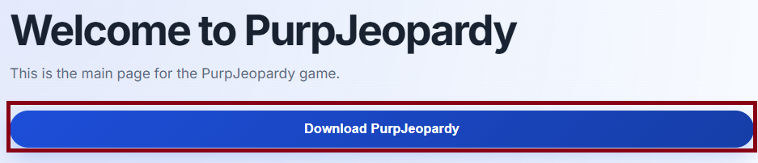
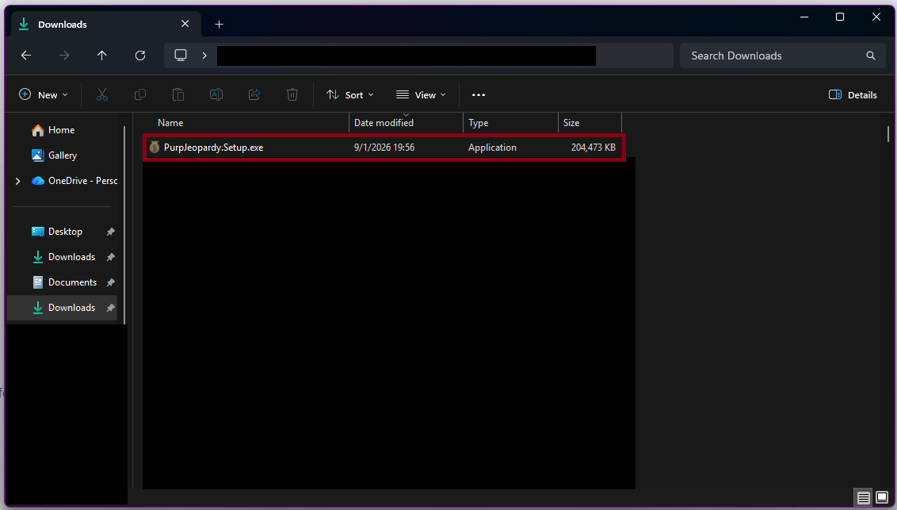
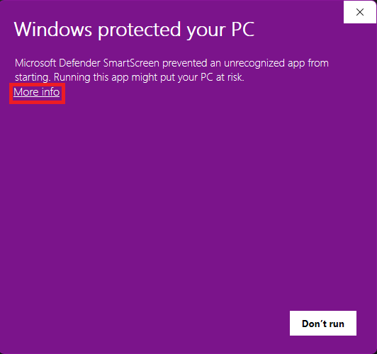
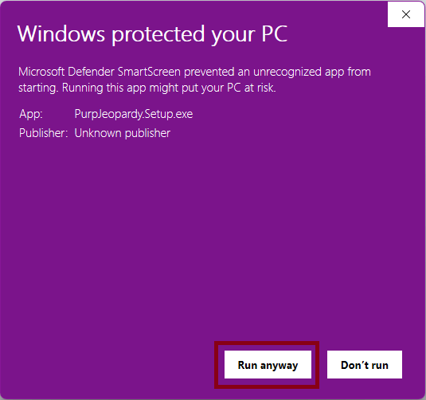
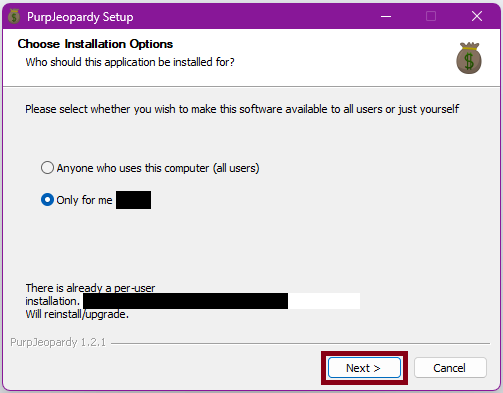
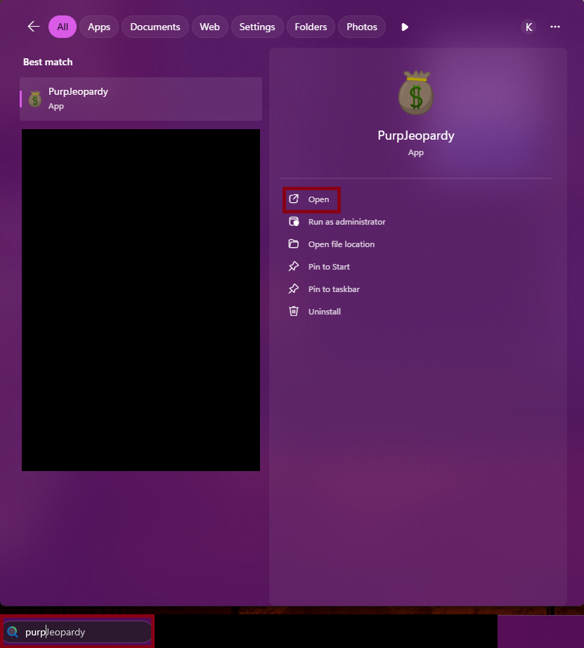

This is the main page for the PurpJeopardy game.
To install PurpJeopardy, follow these steps:

Click the button above to download the latest version of PurpJeopardy

Once the download is complete, locate the downloaded file (PurpJeopardy.Setup.exe) in your Downloads folder. Double-click the file to run the installer.


If you are warned by Windows about a suspicious installation, click "More info" and then "Run anyway" to proceed with the installation.

The installation wizard will guide you through the installation process. Follow the on-screen instructions to complete the installation. You may be prompted to choose an installation location.

Once the installation is complete, you can launch PurpJeopardy from the Start menu or by double-clicking the PurpJeopardy shortcut on your desktop.